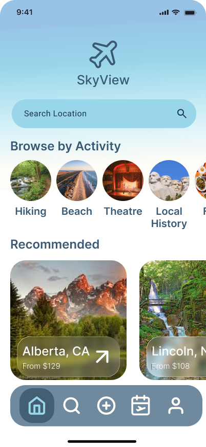
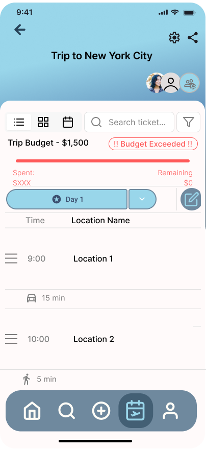
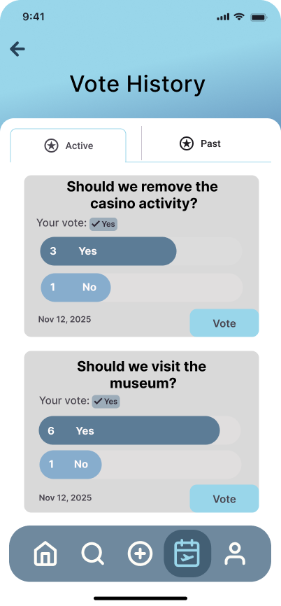

SkyView — Collaborative Travel Planning Prototype
A collaborative travel-planning prototype centered on shared itineraries, search, voting, and role-based collaboration.
- Designed interaction states for itinerary editing, search, voting, budget feedback, and location management.
- Defined Owner, Collaborator, and Follower permissions for shared trip planning.
- Standardized Figma frames, layers, and components to improve consistency and handoff.


